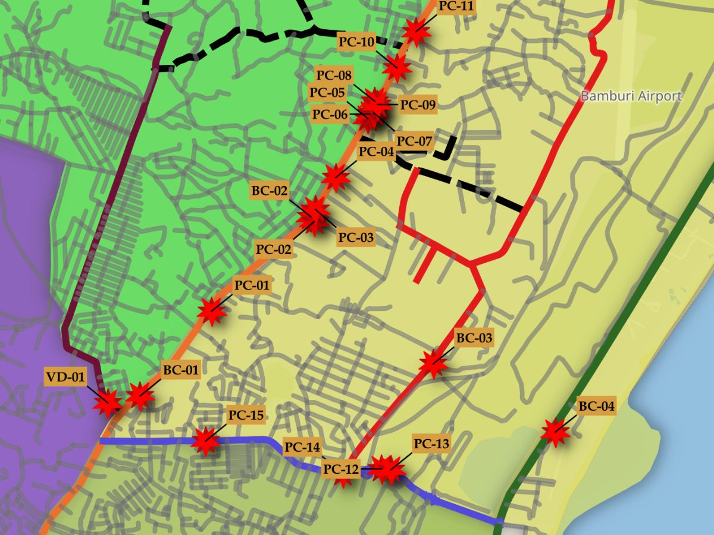

Field Survey
Road Drainage Structure Survey

This was a commissioned survey to assess the physical condition of road drainage structures — culverts, channels, and similar infrastructure — combining field-based scoring with terrain analysis to understand how each structure sits within its surrounding landscape.
The problem
Drainage structure condition isn't just about the structure itself — a culvert can be structurally sound but still fail to drain properly if it sits at the wrong point on a slope. The survey needed to capture both: a consistent way to score physical condition, and the terrain context around each site.
The approach
I used KoboToolbox and KoboCollect to run the field survey, scoring each structure against a weighted Structural Condition Index rather than a simple pass/fail check — giving a more nuanced picture of where each site sat between "fine" and "needs attention."
Alongside that, I ran slope and gradient analysis in QGIS using DEM (Digital Elevation Model) elevation sampling, to understand the terrain each structure was working within. One real limitation worth noting: the DEM's 30-metre resolution produced zero-gradient artifacts at several sites — flat-looking terrain readings in spots that weren't actually flat, simply because the elevation grid wasn't fine enough to capture smaller slope changes. Recognizing and accounting for that limitation was part of interpreting the results correctly, rather than taking the raw output at face value.
Tools
KoboToolbox & KoboCollect (field data collection) · QGIS (slope/gradient analysis, DEM sampling) · weighted condition scoring
Outcome
The survey was delivered as a PDF map combining condition scores with terrain context, giving the commissioning party a clearer view of not just which structures needed attention, but why — condition alone, terrain factors, or both.